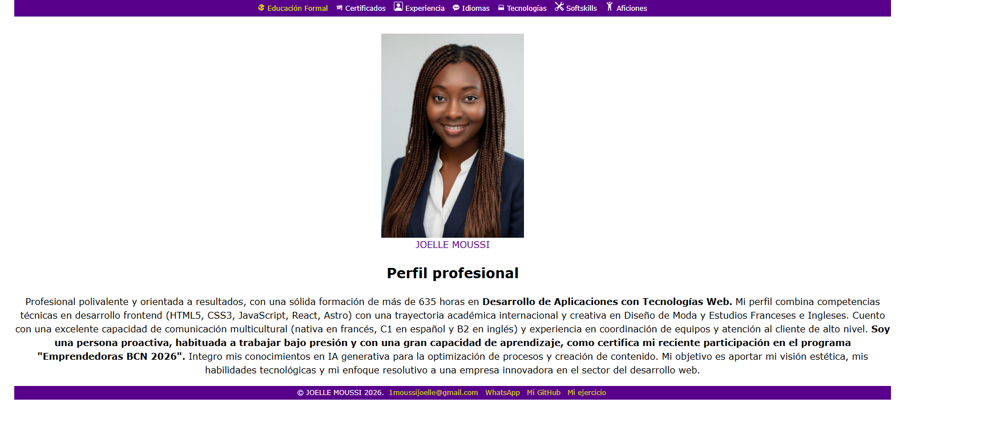
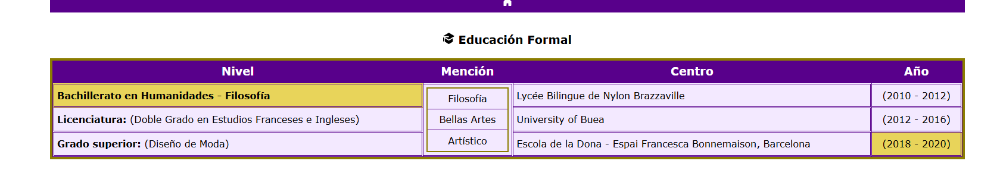
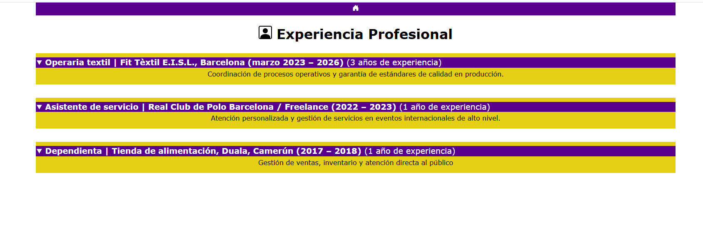
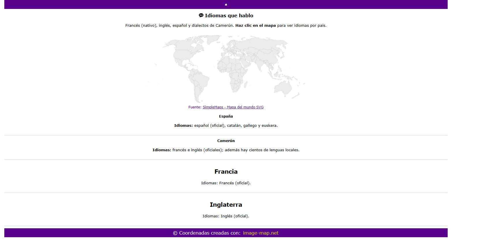

Guide en français : refaire mon CV (HTML + CSS)
Documentation pas à pas · Joelle Moussi · Accès au sommaire
Ce guide est comme une recette de cuisine. L’HTML, c’est la structure (les pièces de la maison). Le CSS, c’est la décoration (les couleurs, la taille, l’alignement).
Objectif : être capable de refaire le même CV, page par page, sans stress.
Tu as plusieurs pages : index.html, educación.html, certificados.html,
experiencia.html, Idiomas.html, tecnologia.html, softskills.html,
aficiones.html.
Sommaire (les pages + captures)
- Introduction
- Image 1 : page d’accueil (profil) —
index.html - Image 2 : éducation —
educación.html - Image 3 : expérience —
experiencia.html - Image 4 : certificats —
certificados.html - Image 5 : langues (carte) —
Idiomas.html - Image 6 : technologies —
tecnologia.html - Image 7 : softskills (vidéo) —
softskills.html - Image 8 : hobbies/aficiones —
aficiones.html - CSS expliqué simplement : les styles que tu utilises
- Révision — questions / réponses
- Quiz final
- Lecteur audio (mini panneau en bas à droite)
Image 1 — Accueil / Profil
Fichier : index.html. Style : css/estilos.css.

Ce que cette page fait :
- Un menu (dans
<nav>) avec des liens vers les autres pages. -
Les icônes du menu : ce sont des petits dessins en SVG (du code) copiés directement dans le HTML,
à l’intérieur de chaque lien
<a>. Comme ça, l’icône se colore toute seule avec le texte (grâce àfill="currentColor"). - Une photo + ton nom avec
<figure>et<figcaption>. - Un texte de profil dans
<p>. - Un footer (en bas) avec email, WhatsApp, GitHub.
Astuce : pense à la page comme une feuille A4. En haut le titre/menu, au milieu le contenu, en bas les contacts.
Code complet (HTML + CSS)
HTML complet — index.html
CSS (pour index.html)
Image 2 — Éducation
Fichier : educación.html. Style : css/estilos.css.

L’idée : tu as choisi une table pour afficher les infos comme un tableau propre.
<caption>: le titre du tableau.<thead>/<tbody>: la partie “entête” et la partie “lignes”.rowspan: une cellule qui prend plusieurs lignes (ici “Mención”).- Classes CSS :
.tabla-educacion,.col-mencion,.resalte-trio.
Code complet (HTML + CSS)
HTML complet — educación.html
CSS (pour educación.html)
Image 3 — Expérience
Fichier : experiencia.html. Style : css/estilos.css.

Ici tu utilises <details> et <summary> : c’est un système “ouvrir / fermer”.
summary: la ligne sur laquelle on clique (comme le titre d’un tiroir).details: le tiroir qui contient le texte.- Style : tu changes le fond (jaune), et le
summaryest violet avec texte blanc.
Code complet (HTML + CSS)
HTML complet — experiencia.html
CSS (pour experiencia.html)
Image 4 — Certificats
Fichier : certificados.html. Style : css/estilos.css.

Ici tu utilises une liste de définitions : <dl>, avec <dt> (le titre) et
<dd> (l’explication).
C’est comme un dictionnaire : le mot (dt) puis la définition (dd). Le CSS met un petit trait à gauche sur les dd
pour faire “bloc de texte”.
Code complet (HTML + CSS)
HTML complet — certificados.html
CSS (pour certificados.html)
Image 5 — Langues (carte cliquable)
Fichier : Idiomas.html. Style : css/estilos.css + css/idiomas.css.

L’idée : une image + des zones cliquables.
usemap: connecte l’image au plan.<map>et<area>: définissent les zones cliquables (coordonnées).:targeten CSS : quand tu cliques (ex:#espana), la section devient visible et “mise en évidence”.
Image-map, c’est comme une carte au trésor : tu dis “quand je clique ici, je vais à cette partie de la page”.
Code complet (HTML + CSS)
HTML complet — Idiomas.html
CSS (pour Idiomas.html)
Image 6 — Technologies
Fichier : tecnologia.html. Style : css/estilos.css.

Ici tu as une liste <ul> (liste principale), et des listes <ol> (listes numérotées) dedans.
On appelle ça des listes imbriquées.
Le CSS de .lista-tecnologia crée une “carte” jaune avec ombre (comme une fiche).
Code complet (HTML + CSS)
HTML complet — tecnologia.html
CSS (pour tecnologia.html)
Image 7 — Softskills (vidéo)
Fichier : softskills.html. Style : css/estilos.css.

Ici tu utilises <video> avec une source Video-cv.mp4.
controls: affiche les boutons lecture/pause.autoplay+muted: essaie de démarrer automatiquement (souvent possible seulement si muet).- CSS : dans
estilos.css, la vidéo est centrée et reste responsive (max-width 100%).
Code complet (HTML + CSS)
HTML complet — softskills.html
CSS (pour softskills.html)
Image 8 — Aficiones (hobbies)
Fichier : aficiones.html. Style : css/estilos.css (avec un thème spécial).

Cette page est spéciale : tu as mis class="pagina-aficiones" sur <body>. Comme ça, le CSS peut dire :
“sur cette page seulement, je veux un style différent”.
- Images + liens : tu cliques sur l’image du chat pour ouvrir un site.
- Table + listes : tu mélanges
<table>,<ul>,<ol>. - Formulaire :
<form>,<fieldset>, radios, checkboxes, upload.
Code complet (HTML + CSS)
HTML complet — aficiones.html
CSS (pour aficiones.html)
CSS expliqué simplement (avec tes exemples)
Idée générale : le CSS dit “comment ça doit être beau”.
- Sélecteur : qui je veux décorer (ex:
header,.yellow). - Propriété : quoi je change (ex:
color,margin). - Valeur : le réglage (ex:
#58008b,1rem).
1) La base : police et lisibilité
Dans css/estilos.css, tu choisis une police simple et une bonne hauteur de ligne :
font-family et line-height. C’est comme choisir une écriture lisible dans un cahier.
Note — system-ui : dans une liste font-family, le mot-clé
system-ui demande au navigateur d’utiliser la police d’interface du système
(celle des menus, fenêtres et textes natifs sur Windows, macOS, Android, etc.). La page ressemble un peu
plus à l’appareil de la personne qui lit, et c’est souvent très lisible. Tu peux le mettre en dernier après
d’autres noms de polices, comme dans ton HTML d’exemple :
Verdana, Arial, sans-serif, system-ui. En secours on voit parfois
-apple-system (Safari / iOS) ou "Segoe UI" (Windows) avant sans-serif.
2) Centrer la page
Tu as mis width: 80% et margin: 0 auto sur body. Ça veut dire :
“la page ne prend pas tout l’écran, et elle se met au milieu”. Comme une feuille posée au centre d’une table.
3) Header / Footer (barres violettes)
Tu mets un fond violet avec background-color: #58008b et du texte blanc avec color: white.
Les liens deviennent blancs et sans soulignement avec text-decoration: none.
4) La couleur jaune (classe .yellow)
Quand tu veux qu’un lien du menu soit “spécial”, tu ajoutes class="yellow".
C’est comme mettre un surligneur jaune sur un mot important.
5) Photos : centrer et garder la bonne taille
Avec .foto tu fais : display: block + margin: 0 auto.
Résultat : la photo se met bien au centre.
6) Tables (Éducation)
Pour les tables, tu utilises des bordures et un “cadre” :
border, border-collapse / border-spacing, et des styles sur td/th.
C’est comme dessiner une grille avec une règle.
7) Ouvrir / fermer (Expérience)
Les blocs <details> ont un fond (jaune) et le <summary> est en violet.
C’est comme des petites boîtes : tu vois le titre, et tu ouvres pour voir le contenu.
8) Page spéciale (Aficiones)
Avec body.pagina-aficiones ... tu dis : “ce style n’existe que si le body a cette classe”.
C’est comme dire : “dans cette pièce de la maison, on met une déco différente”.
9) Langues : le CSS :target
Dans css/idiomas.css, tu utilises .detalle-pais:target.
Quand tu cliques sur un pays, l’URL devient par exemple #espana et la section correspondante est mise en évidence.
C’est comme une lampe qui s’allume sur la bonne réponse.
Mini check-list pour refaire le projet :
- Créer les dossiers
cssetimg. - Créer
index.html+ le menu vers les autres pages. - Créer chaque page (éducation, certificats, etc.).
- Lier le CSS dans chaque page :
<link rel="stylesheet" href="css/estilos.css">. - Mettre les images dans
img/et vérifier les chemins (ex:img/foto.jpg). - Ouvrir
index.htmldans le navigateur et tester tous les liens.
À lire avant le quiz : 20 questions + réponses
Lis d’abord les questions et les réponses. Ensuite, fais le quiz juste après.
Les 20 questions + réponses (révision)
-
Question : À quoi sert
<link rel="stylesheet" href="css/estilos.css">?Réponse : Ça relie la page HTML au fichier CSS.
-
Question : À quoi sert
lang="fr"dans<html lang="fr">?Réponse : Ça dit que la page est en français (utile pour accessibilité et navigateur).
-
Question : Quelle balise contient le contenu principal ?
Réponse :
<main>. -
Question : Quelle balise contient le menu ?
Réponse :
<nav>. -
Question : Comment faire un lien vers
index.html?Réponse :
<a href="index.html">Accueil</a>. -
Question : À quoi sert
altdans<img ... alt="...">?Réponse : Donner un texte si l’image ne s’affiche pas et aider les lecteurs d’écran.
-
Question : Différence entre
classetid?Réponse :
classpeut être répétée;iddoit être unique sur la page. -
Question : Comment sélectionner une classe en CSS ?
Réponse : Avec un point, ex :
.yellow { ... }. -
Question : Comment sélectionner une balise en CSS ?
Réponse : Avec le nom, ex :
header { ... }. -
Question : À quoi sert
margin: 0 auto;?Réponse : Centrer un bloc horizontalement (si une largeur est définie).
-
Question : Quelle propriété change la couleur du texte ?
Réponse :
color. -
Question : Quelle propriété change la couleur de fond ?
Réponse :
background-color. -
Question : Quelle balise fait une boîte ouvrir/fermer ?
Réponse :
<details>. -
Question : Dans
<details>, quelle balise est cliquable ?Réponse :
<summary>. -
Question : Dans un tableau, c’est quoi
<th>?Réponse : Une cellule de titre (entête).
-
Question : Dans un tableau, c’est quoi
<td>?Réponse : Une cellule normale.
-
Question : Que veut dire
rowspan="3"?Réponse : La cellule prend 3 lignes.
-
Question : Quelles balises font une “liste dictionnaire” ?
Réponse :
<dl>(liste),<dt>(terme),<dd>(description). -
Question : Quel attribut affiche les boutons d’une vidéo ?
Réponse :
controls. -
Question : Comment faire un style seulement pour une page spéciale ?
Réponse : Mettre une classe sur le body (ex :
class="pagina-aficiones") et cibler :body.pagina-aficiones ... { ... }. -
Question : Quelle est la différence entre
marginetpadding?Réponse :
margin= espace à l’extérieur (entre les blocs).padding= espace à l’intérieur (entre le contenu et le bord). -
Question : À quoi sert
border?Réponse : Ça ajoute une bordure (une “ligne”) autour d’un élément.
-
Question : C’est quoi le “box model” (modèle de boîte) ?
Réponse : Chaque élément est une boîte :
content(contenu) +padding+border+margin. -
Question : À quoi sert
display: block?Réponse : L’élément prend toute la largeur et va à la ligne (comme un paragraphe).
-
Question : Pourquoi on met parfois
box-sizing: border-box?Réponse : Pour que la largeur/hauteur inclue le
paddinget laborder(plus facile à contrôler).
Quiz (A, B, C) — 20 questions
Choisis A, B ou C. Les réponses sont tout en bas.
1) À quoi sert <link rel="stylesheet" href="css/estilos.css"> ?
- Ajouter une image
- Relier la page au CSS
- Créer un titre
2) Dans <html lang="fr">, lang="fr" sert à…
- Dire la langue de la page
- Mettre la page en vert
- Ajouter un menu
3) Quelle balise contient le contenu principal ?
<main><footer><head>
4) Quelle balise contient le menu ?
<nav><img><table>
5) Quel code fait un lien vers l’accueil ?
<a src="index.html">Accueil</a><a href="index.html">Accueil</a><link href="index.html">Accueil</link>
6) À quoi sert alt dans <img ... alt="..."> ?
- Changer la couleur de l’image
- Mettre un texte si l’image ne s’affiche pas + accessibilité
- Mettre l’image en vidéo
7) class et id : quelle phrase est vraie ?
idpeut être répété partoutclassest unique etidpeut être répétéclasspeut être utilisé plusieurs fois etiddoit être unique
8) Comment sélectionner la classe yellow en CSS ?
#yellow {}.yellow {}yellow {}
9) Comment sélectionner la balise header en CSS ?
header {}.header {}#header {}
10) margin: 0 auto; sert surtout à…
- Centrer un bloc horizontalement
- Mettre un fond violet
- Mettre le texte en gras
11) Quelle propriété change la couleur du texte ?
background-colorcolorborder
12) Quelle propriété change la couleur de fond ?
background-colorfont-sizeline-height
13) Quelle balise fait une boîte “ouvrir/fermer” ?
<section><details><strong>
14) Dans <details>, quelle balise est le titre cliquable ?
<summary><caption><figcaption>
15) Dans une table, les cellules d’entête sont…
<td><th><tr>
16) Dans une table, une cellule “normale” est…
<td><th><thead>
17) rowspan="3" veut dire…
- La cellule prend 3 colonnes
- La cellule prend 3 lignes
- La cellule devient rouge
18) Quel groupe de balises sert comme “dictionnaire” (titre + explication) ?
<ul><li><dl><dt><dd><table><tr><td>
19) Pour afficher une vidéo avec boutons lecture/pause, quel attribut est correct ?
controlscontrolcontroller
20) Comment appliquer un style seulement à la page “Aficiones” ?
- Mettre
class="pagina-aficiones"sur<body>et utiliserbody.pagina-aficiones ...en CSS - Mettre
id="pagina-aficiones"sur<head> - Mettre
class="pagina-aficiones"sur<meta>
21) margin et padding : lequel est l’espace “à l’extérieur” ?
paddingmarginborder
22) À quoi sert border en CSS ?
- À ajouter une bordure autour d’un élément
- À centrer le texte
- À changer la langue de la page
23) Dans le “box model”, l’ordre est : contenu → …
margin→border→paddingpadding→border→marginborder→margin→padding
24) Que fait souvent display: block ?
- L’élément prend toute la largeur et va à la ligne
- L’élément devient invisible
- L’élément devient une image
25) Pourquoi utiliser box-sizing: border-box ?
- Pour que la largeur/hauteur inclue padding + border
- Pour mettre toutes les lettres en majuscules
- Pour enlever tous les liens
Réponses du quiz (clique pour voir)
1) B — 2) A — 3) A — 4) A — 5) B
6) B — 7) C — 8) B — 9) A — 10) A
11) B — 12) A — 13) B — 14) A — 15) B
16) A — 17) B — 18) B — 19) A — 20) A
21) B — 22) A — 23) B — 24) A — 25) A